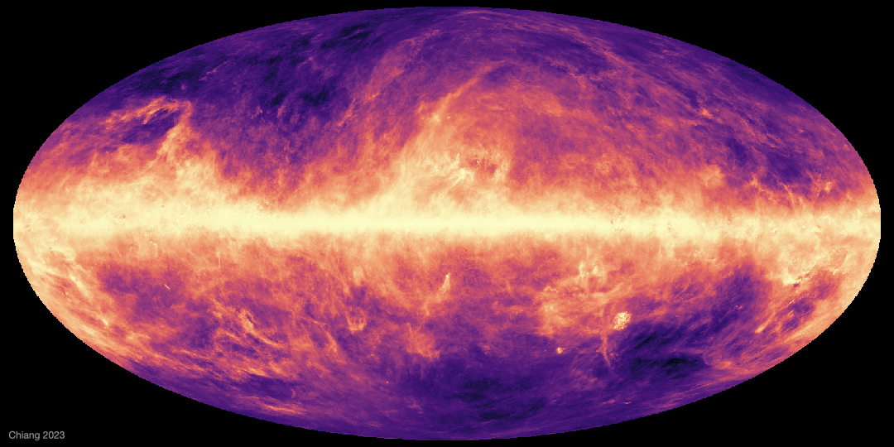
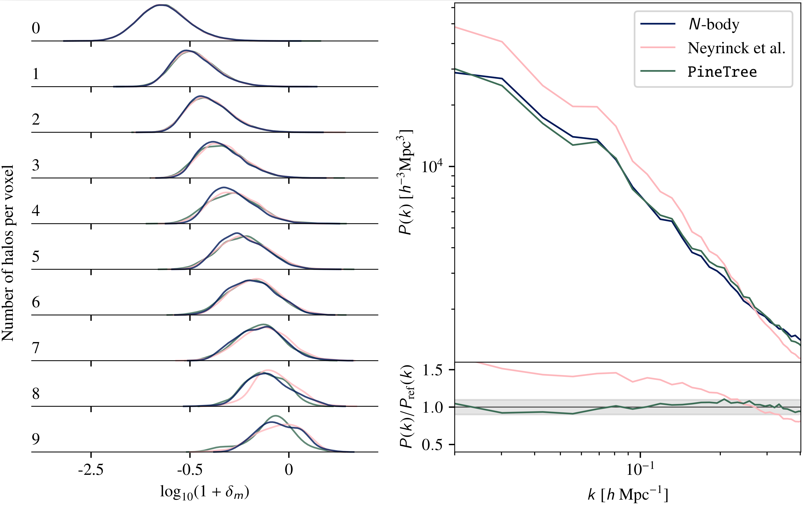
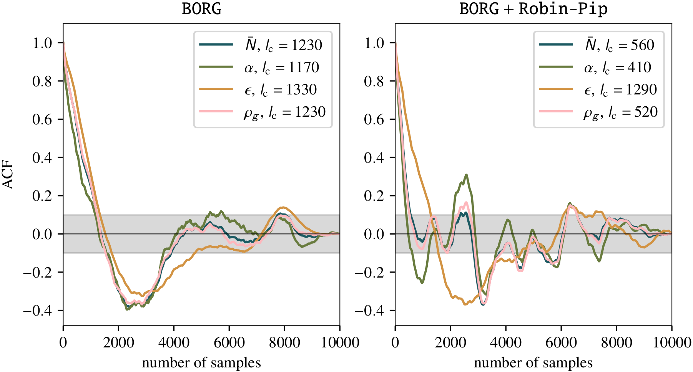

Advancing cosmological field-level inference
with physics-informed Bayesian neural networks
PhD defense, Institut d'Astrophysique de Paris, 30.01.2025
Simon Ding
supervised by Guilhem Lavaux (IAP) & Jens Jasche (Stockholm University)

Standard model $\Lambda$CDM

Inflation & General relativity
$\Lambda$CDM is successful, but many central questions remain open:
- What is the nature of dark matter & dark energy?
- What are the properties of the primordial Universe?
- Are the underlying model assumptions still valid?
- ...
How can we further advance our cosmological understanding?
e.g. Perivolaropoulos & Skara (2022), Efstathiou (2024)
Test & validate our cosmological models
- Models like $\Lambda$CDM are characterised by parameters
e.g. $\Omega_{\mathrm b}, \Omega_{\mathrm m}, n_{\mathrm s}, A_{\mathrm s}, \dots$ - Physics is encoded in these parameters
Inferring cosmological parameters equates to learning
about the physics of our Universe
⇒ Need observations (Data)
Data in Cosmology
Galaxy clustering data
i.e. distribution of galaxies around us

New data — new era
Next-generation surveys are here!
e.g. DESI, Euclid, LSST, SPHEREx, ...
Unprecedented data sets with increase volume and sensitivity
Euclid Collaboration: Mellier et al. (2024)
⇒ Modern cosmology is transitioning into a data-driven era
How to go from data to cosmological parameters?
No unique recovery possible due to:
- Incompleteness (e.g. survey masks)
- Systematics (e.g. dust, atmosphere)
- Noise (e.g. instrument)
⇒ Ill-posed inverse problem
Euclid Collaboration: Scaramella et al. (2022)
Yi-Kuan Chiang (2023)
Bayesian Inference
Given some observational data, we want to derive
a statistical solution of sensible cosmological parameters $\theta$
⇒ Construct data model $\mathcal{M}(\theta)$ $=\mathcal{M}(\theta_{\text{cosmo}},\theta_{\text{inst}},\dots)$
Data model encodes all observational and physical effects!
The canonical approach to cosmological inference

Compression will reduce information content of data
⇒ Switch to
field-level inference
Field-level inference
Model the full cosmic field to
maximise the information,
extracted from the data

Leclerq & Heavens (2021)
Field-level inference from galaxy surveys with $\texttt{BORG}$

Lavaux & Jasche (2016), Jasche & Lavaux (2019)
Sampling $\sim 2.1\times 10^6$ parameters (ICs, cosmological parameters, ...)
Solving for a high-dimensional posterior
Numerical solution of $P(\theta|\text{data})$ using
efficient Monte Carlo Markov Chain (MCMC) methods
- Discretise the posterior distribution through samples
- In $\texttt{BORG}$:
Hamiltonian Monte Carlo (HMC)
⇒ Leverage gradient information - Need many evaluations of data model
Credit: Adam Andrews
Inferred ICs
Inferred density
Observed galaxies
- Our understanding of the Universe is encoded in
our theoretical models and its parameters - We may gain new insights by inferring the values
of these cosmological parameters through observations
Inferred parameters $\theta$
e.g. HMC algorithms
⟶
Cosmological model
e.g. $\Lambda$CDM, $w$CDM, ...
⟶
Observational data
e.g. Euclid, LSST, ...
⟶
In the data-driven era of cosmology
We need accurate, flexible, and efficient data models
Leverage machine learning as a new modelling approach
⇒ Neural networks as universal function approximators
Can we be more ambitious?
⇒ Integrate neural networks directly into cosmological inference
as Bayesian neural networks
We only have one Universe!
→ Data unable to constrain billions of degenerate parameters
Physics-informed solutions:
- Neural networks with reduce parameter space
- Incorporation of better (behaved) priors $P(\theta)$
$\texttt{PineTree}$
(Physical and Interpretable NEtworks for TRacEr Emulation)
Ding, Lavaux, Jasche (2024);
ArXiv: 2407.01391
Ding, Lavaux, Jasche (2025), in prep.
Field-Level inference from Galaxy surveys with $\texttt{BORG}$
Lavaux & Jasche (2016), Jasche & Lavaux (2019)
Bias model
Modelling $\delta_m(x) \rightarrow n\big(M|\delta_m(x)\big)$ is challenging!

⇒ Simplify to "dark matter only" universe (for now)
Field-Level inference from Galaxy surveys with $\texttt{BORG}$

Consider only dark matter: $\delta_{\rm m}(x) \rightarrow n_{\rm h}\big(M|\delta_{\rm m}(x)\big)$
Benchmark new model
- Train as traditional neural network
- Compare model predictions against $N$-body simulations
- Optimise computational efficiency
A physics-informed neural bias model
over-density field
+
physical contraints
halo catalogues
From approximate gravity solvers
i.e. 2LPT, COLA (Tassev et al. 2013)
- fast (GPU support)
- differentiable
- Stochastic
- Explainable
- 19-35 parameters
Validated via:
- Halo mass function
- Power spectrum
- Bispectrum
Likelihood assumption
• Use isotropy
(Mixture Density Network)
 ⇒
⇒
 ⇒
⇒ ⇒
⇒
$\delta_{\rm m}(x)$ → Convolve → Transform → Sample → $n_{\rm h}\big(M|\delta_{\rm m}(x)\big)$

Benchmark — Setup
- Optimise using Poisson likelihood
- 10 halo catalogues at $z=\{ 0, 1 \}$ from $\texttt{L-Gadget}$ and $\texttt{ROCKSTAR}$
(Springel, 2005 and Behroozi et al., 2013) - Corresponding 2LPT overdensity fields
- $L_{\rm box} = 500\,h^{-1}\rm{Mpc}$
- $M_{\rm{vir}} > 2 \times 10^{12}\,h^{-1}M_{\odot}$
- Validate on unseen simulations

Comparison against local bias model
Truncated power law (Neyrinck et al., 2014):
$$\lambda(x) = \textcolor{teal}{\bar{N}} (\delta_{\rm m}(x) + 1)^{\textcolor{teal}{\alpha}} \exp \left[- \left(\frac{\delta_{\rm m}(x) + 1}{\textcolor{teal}{\rho_{\exp}}}\right)^{-\textcolor{teal}{\varepsilon}}\right]$$
Neyrinck et al. (2014)
On model interpretability — kernel weights

for $L_{\rm voxel} = 7.81\,h^{-1}\rm{Mpc}$
$\texttt{PineTree}$ as Bayesian neural network

Parameter samples:

What went
wrong?
Common issues — Bayesian Neural networks
- Scaling degeneracies
- e.g. $x_{i} = f(x_{i-1}) = \omega_{i}x_{i-1} + b_i$
- Re-parameterise:
⇒ Yields equivalent output $x_i$ for any $\kappa$
Common issues — Bayesian Neural networks
- Scaling degeneracies
- Improper priors due to activation functions
- e.g. $u\equiv\text{softplus}(x) = \ln\left( 1 + e^x \right)$ with $P_x(x) = \text{const.}$
$u$ not uniformly distributed anymore: $$ P_u(u) = P_x(x)\left|\frac{\mathrm{d}x}{\mathrm{d}u}\right| = P_x(x) \frac {1}{1 - e^{-u}} $$
Common issues — Bayesian Neural networks
- Scaling degeneracies
- Improper priors due to activation functions
Degeneracies can be identified & fixed
thanks to the reduced parameter space
- Removed 3 degenerate
parameters - Added inverse Jacobian
to adjust prior

Joint inference in $\texttt{BORG}$ is stable

Intermediate Summary
• Generative model for LARGE (Euclid-like) volumes
• Differentiable & fast
• Robust & interpretable model (Doubles as mock generator)
• Reduced number of weights
⇒ Direct inference of model parameters possible
$\texttt{Robin-Pip}$
(RObust Bayesian INference with Physics-Informed Priors)
Ding, Doeser, Lavaux, Jasche (2025), in prep.
Field-Level inference from Galaxy surveys with $\texttt{BORG}$
Lavaux & Jasche (2016), Jasche & Lavaux (2019)
$\texttt{PineTree}$
Neural network
Parameter space is highly degenerate
Can we pick better priors $P(\theta)$?
Using $N$-body simulations e.g. Quijote (Villaescusa-Navarro et al., 2020)
Physics-informed priors from simulations

 $$\div$$
$$\div$$

 $$=$$
$$=$$


⇒ New constraint from simulations $y = \frac{P_{\rm m}(k)}{P_{\rm h}(k)}$
Note: Any summary statistic other than power spectrum may be used
Physics-informed priors from simulations
Conditional independent constraint $y\,$: $P(\text{data}|y) = P(\text{data})$
\[ \begin{aligned} P(\theta|\text{data}, y) & = \frac{P(\text{data}, y|\theta)P(\theta)}{P(\text{data})} \\ & = \frac{P(\text{data}|\theta)}{P(\text{data})} \frac{P(y|\theta)P(\theta)}{P(y)} = \frac{P(\text{data}|\theta)P(\theta|y)}{P(\text{data})} \\ & \propto P(\text{data}|\theta)P(y|\theta)P(\theta) \phantom{\frac{P(\text{data}, y|\theta)P(\theta)}{P(\text{data})}} \end{aligned} \]
Field-Level inference from Galaxy surveys with $\texttt{BORG}$
Lavaux & Jasche (2016), Jasche & Lavaux (2019)
Robin-PiP
Bias model
Implicitly constrained prior parameter space of bias model

Self-consistent test
- Inference with original $\texttt{BORG}$ pipeline
- Inference with additional $\texttt{Robin-Pip}$ contribution
- Forward model: first-order LPT $+$ Truncated power law halo bias
- Two inference scenarios:
- Wide uniform priors on bias parameters
- Bounded uniform priors on bias parameters
Inference scenario 1
\[ \lambda(x) = \textcolor{teal}{\bar{N}} (\delta_{\rm m}(x) + 1)^{\textcolor{teal}{\alpha}} \exp \left[- \left(\frac{\delta_{\rm m}(x) + 1}{\textcolor{teal}{\rho_{\exp}}}\right)^{-\textcolor{teal}{\varepsilon}}\right] \]
\[ \begin{align} \bar{N} &\in \left( - \infty, \infty \,\right) \\ \alpha &\in \left( - \infty, \infty \,\right), \\ \varepsilon &\in \left( - \infty, \infty \,\right), \\ \rho_{\rm exp} &\in \left( - \infty, \infty \,\right). \end{align} \]
$\texttt{BORG}$
$\texttt{BORG}$ & $\texttt{Robin-Pip}$
- Inference algorithm explores all statistically plausible solutions
- $\texttt{Robin-Pip}$ allows only physically plausible solutions
Inference scenario 2
Now with bounded priors:
\[ \begin{align} \bar{N} &\in \left( 0, 10^8 \,\right)\\ \alpha &\in \left( 0, 6 \,\right],\\ \varepsilon &\in \left( 0, 3 \,\right], \\ \rho_{\rm exp} &\in \left( 0, 10 \,\right]. \end{align} \]
$\texttt{BORG}$
$\texttt{BORG}$ & $\texttt{Robin-Pip}$
Check bias parameter constraints


Increased sampling efficiency
Summary
Physics-informed neural bias — $\texttt{PineTree}$
- Reduce parameter space through e.g. symmetries
- Computationally efficient & differentiable
- Application as Bayesian neural network possible
Physics-informed priors — $\texttt{Robin-Pip}$
- Principled way of incorporating high-fidelity simulations
- Agnostic to underlying forward model
- Improve parameter constraints & sampling efficiency
Outlook
$\texttt{PineTree}$
- Reduce modelling assumptions e.g. Poisson statistics
- Increase model complexity e.g. cosmology dependence
$\texttt{Robin-Pip}$
- Test with over-parameterised models e.g. neural networks
- Benchmark with external simulations
Test end-to-end inference on independent high-fidelity simulations
Extension to galaxy mocks and eventually real data
Back-up slides
PineTree
Log-Normal mixture network
$$ n(M|\psi_{i}) = \frac{\bar{N}_i}{V}\sum_{n=1}^{N_{\text{mix}}} \frac{\alpha_{ni}}{M \sqrt{2\pi\sigma_{ni}^{2}}} \exp\left[ - \frac{\left( \ln M - \mu_{ni} \right) ^{2}}{2\sigma_{ni}^{2}} \right], \label{eq:mdn}$$
$\bar{N}_i = \exp\left[\omega^{\bar{N}}\boldsymbol{\psi}_{i} + b^{\bar{N}} \right]$
$\boldsymbol{\alpha}_{i} = \text{softmax}(\boldsymbol{\omega}^\alpha\psi_{i} + \boldsymbol{b}^\alpha)$
$\mu_{ni} = \begin{cases} w_n^\mu \psi_i + b_n^\mu &\text{if $n = 0$}\\ \text{max}\big[ w_n^\mu\psi_i + b_n^\mu \big] + \mu_{n-1} &\text{if $ n > 0$} \end{cases}$
$\sigma_{ni} = \exp\left[\omega_{n}^\sigma \psi_{i} + b_{n}^\sigma\right]$
Conditional halo mass function

Cross-correlation coefficient